Attaching SeuratObject
Attaching package: 'dplyr'The following objects are masked from 'package:stats':
filter, lagThe following objects are masked from 'package:base':
intersect, setdiff, setequal, union学习资料：https://holab-hku.github.io/Fundamental-scRNA/
载入下面的包，如果没有就先安装下。
下载数据：
Data used in this material is a 10k PBMC data getting from 10x Genomics website
https://github.com/holab-hku/Fundamental-scRNA/blob/master/data/10k_PBMC.h5
单细胞RNA测序（scRNA-seq）包括一系列技术，以产生许多单个细胞的全基因组表达数据。

根据技术主要可以分为两类：Droplet-based 和 Non droplet-based。
Droplet-based：
Non droplet-based：
下图显示了一些常见的单细胞分离技术（Hwang, Lee, and Bang 2018）

双端测序输出两个 fastq 文件，分别对应测序的5′和3′方向。使用这种测序技术，配对的第一个read总是与引物的细胞（条形码+UMI）部分一致。

根据获得的细胞条形码、UMI 和 cDNA 的 reads，我们可以估计转录物的丰度。这允许 mapping 算法区分哪些序列是条形码，哪些是转录序列。因此，在确定细胞条形码和 UMI 条形码序列的长度和位置时，识别用于测序的文库制备化学方法非常重要。
为了获得 UMIs 的计数，我们可以首先通过细胞条形码对 reads 进行分组，然后对齐 cDNA reads 并使用 UMIs 对每个细胞每个基因的独特分子进行计数。

对细胞条形码和 UMIs 的分析包括在校准过程中，我们将在下一节中介绍更多内容。
| Methods | Transcript coverage | UMI possibility | Strand specific | References |
|---|---|---|---|---|
| Tang method | Nearly full-length | No | No | Tang et al. (2009) |
| Quartz-Seq | Full-length | No | No | Sasagawa et al. (2013) |
| SUPeR-seq | Full-length | No | No | X. Fan et al. (2015) |
| Smart-seq | Full-length | No | No | Ramsköld et al. (2012) |
| Smart-seq2 | Full-length | No | No | Picelli et al. (2013) |
| MATQ-seq | Full-length | Yes | Yes | Sheng et al. (2017) |
| STRT-seq STRT/C1 | 5′-only | Yes | Yes | Islam et al. (2011) |
| CEL-seq | 3′-only | Yes | Yes | Hashimshony et al. (2012) |
| CEL-seq2 | 3′-only | Yes | Yes | Hashimshony et al. (2016) |
| MARS-seq | 3′-only | Yes | Yes | Jaitin et al. (2014) |
| CytoSeq | 3′-only | Yes | Yes | H. C. Fan, Fu, and Fodor (2015) |
| Drop-seq | 3′-only | Yes | Yes | Macosko et al. (2015) |
| InDrop | 3′-only | Yes | Yes | Klein et al. (2015) |
| Chromium | 3′-only | Yes | Yes | Zheng et al. (2017) |
| SPLiT-seq | 3′-only | Yes | Yes | Rosenberg et al. (2018) |
| sci-RNA-seq | 3′-only | Yes | Yes | Cao et al. (2017) |
| Seq-Well | 3′-only | Yes | Yes | Gierahn et al. (2017) |
| DroNC-seq | 3′-only | Yes | Yes | Habib et al. (2017) |
| Quartz-Seq2 | 3′-only | Yes | Yes | Sasagawa et al. (2018) |
原始 RNA 测序数据可能在 FASTQ 文件中。它是一种基于文本的格式，用于存储由单字母代码表示的读序列。 FASTQ 文件中的序列以@符号开头的readID开始，然后是序列数据行，一个简单的加号+分隔符和碱基质量分数。
它以以下格式表示:
@ReadID
READ SEQUENCE
+
SEQUENCING QUALITY SCORES一般来说，fastq 文件是使用质量控制工具（如 FastQC）进行预处理的。这将输出一系列评估序列 reads 质量的指标。
Cell Ranger 是一组分析管道，用于处理 Chromium 单细胞数据以对齐 reads，生成特征条形码矩阵，执行聚类和其他二次分析等等。 它帮助我们生成 RNA reads 计数矩阵，我们将在学习中使用。
一些概念：
从 Chromium 10X 管道获得的单细胞数据可以使用 cellranger 通过以下工作流程进行处理。

下面是我们将从 cellranger 获得的输出文件夹。outs 文件夹包含最终的管道输出文件，其中包括我们需要用于下游分析的内容。


以上是我们可以在outs文件夹中找到的内容。它包含了一些测序数据的总结信息，注释的读取序列，以及我们通常工作的基因表达矩阵。下面是我们想看的一些重要的输出文件。
矩阵
测序时，Chromium 10X 不仅对转录组进行测序，还对任何可能的分子进行测序。这就导致了背景条形码的存在。细胞相关条形码是cellranger 认为标记来自真实细胞的转录组而不是背景的条形码。
对于不同版本的cellranger，使用不同的算法来检测细胞相关条形码。一般的想法是，细胞的条形码应该比背景条形码有更多的转录本计数。更多信息请访问：https://kb.10xgenomics.com/hc/en-us/articles/115003480523-How-are-barcodes-classified-as-cell-associated-。
cellranger管道输出两种类型的特征条形码矩阵：
raw_feature_bc_matrix和filtered_feature_bc_matrix文件夹中都包含三个文件。
Web Summary .html
一个概要的HTML文件包含了摘要指标和自动化二次分析结果。如果在流程运行期间检测到问题，将在此页面上显示警报。
该HTML文件包括两个部分，SUMMARY（摘要）和ANALYSIS（分析）。您还可以点击每个仪表板顶部的“?”以获取有关每个指标的更多信息。


其他用于评估的指标：
Estimated Number of Cells: 500-10,000Mean Reads per Cell: 20,000 reads/cell minimum recommended reads per cell around 10,000Valid barcodes: greater than 75%Q30 bases in RNA read: ideally greater than 65%Reads mapped confidently to transcriptome: ideally greater than 30%Reads mapped antisense to gene: ideally smaller than 10%BAM
BAM文件以二进制压缩格式保存了关于 mapping reads 的信息。它由可选的头部部分和对齐部分组成。如果存在头部部分，它将通过第一列中的@与对齐部分区分，并位于对齐部分之前。
当解压缩成SAM文件时，信息以制表符分隔的表格形式存储，其中包含一些标准列和由 Cell Ranger 软件生成的特定列。Cell Ranger特定的列包含与 BAM 条形码、BAM 对齐和特征条形码相关的信息。标准列对应以下内容：
QNAME : read name (generally will include UMI barcode if applicable)
FLAG : number tag indicating the “type” of alignment, link to explanation of all possible “types”
RNAME : reference sequence name (i.e. chromosome read is mapped to).
POS : leftmost mapping position
MAPQ : Mapping quality
CIGAR : string indicating the matching/mismatching parts of the read (may include soft-clipping).
RNEXT : reference name of the mate/next read
PNEXT : POS for mate/next read
TLEN : Template length (length of reference region the read is mapped to)
SEQ : read sequence
QUAL : read quality可以使用 SAMtools 查看 BAM 文件：
samtools view output.bam为了进行基于 RNA 速率的轨迹分析，需要 bam 文件。
分子信息（h5）
它是一个 HDF5 文件，包含有效条形码和有效 UMI 的所有分子的每分子信息，并以高置信度分配给基因或特征条形码。该 HDF5 文件包含与观察到的分子相对应的数据，以及有关所使用的库和特征集的数据。这个文件的结构是：

二级分析 CSV 文件
包含自动辅助分析结果的几个 CSV 文件。它包含有关降维、t-SNE、UMAP、聚类和差分表达的信息。它也通过Web Summary.html文件在ANALYSIS度量中可视化。
Loupe 文件 (.cloupe)
Loupe Browser 是一款桌面应用程序，提供与10x Genomics解决方案的数据进行交互式可视化分析的功能。它可以帮助寻找感兴趣的细胞、发现重要基因、识别细胞类型、探索细胞亚结构、研究细胞亚型、集成基因表达和V(D)J分析，并共享结果。
通过 Loupe Browser 可以查看 Loupe 文件，该文件包含以下信息：
STARsolo（Kaminow，Yunusov和Dobin 2021）是一个专为液滴式单细胞RNA测序数据（例如10X Genomics Chromium系统）设计的分析工具，直接内嵌在STAR代码中。STARsolo的输入是一个FASTQ文件，它可以以与Cell Ranger几乎相同的格式输出基因计数，但速度约快10倍。
STARsolo 程序输出大量反映 reads 比对过程细节的文件。在这里，我们只讨论其中一些关键文件。

双细胞是指虽然设计为由一个细胞生成，但却是由两个细胞生成的人工文库。通常这是由于细胞分选或捕获过程中的错误引起的。
可以使用几种实验策略来去除双细胞：
本节的内容是根据Seurat - Guided Clustering Tutorial进行了一些修改和适应。我们使用的数据是从10x Genomics网站获取的10k PBMC数据。
我们将学习如何读取10X测序数据并将其转换为Seurat对象，进行质控和选择用于进一步分析的细胞，对数据进行归一化处理，识别高可变特征（特征选择），对数据进行缩放，进行线性降维和可视化分析。
Seurat对象充当一个容器，其中包含单个单细胞数据集的数据（如计数矩阵）和分析（如PCA或聚类结果）。在使用 Seurat 分析scRNA-seq数据之前，我们可以先从这里对Seurat对象有一些基本的了解。
我们从读入数据开始。Read10X_h5从10X CellRanger hdf5文件读取计数矩阵，返回唯一的分子识别（UMI）计数矩阵。该矩阵中的值表示每个特征（即基因；行）在每个细胞（列）中检测到的表达量。它可用于读取scATAC-seq和scRNA-seq矩阵。
接下来我们使用计数矩阵来创建一个Seurat对象。
# Load the PBMC dataset
pbmc.data <- Read10X_h5("/Users/wsx/Library/CloudStorage/OneDrive-shanghaitech.edu.cn/Public/data/10k_PBMC.h5")
# Initialize the Seurat object with the raw (non-normalized data).
pbmc <- CreateSeuratObject(counts = pbmc.data, project = "pbmc10k", min.cells = 3, min.features = 200)
pbmcAn object of class Seurat
22432 features across 10813 samples within 1 assay
Active assay: RNA (22432 features, 0 variable features)如果我们想直接使用 cellranger 管道从 10X 读取数据，我们可以使用 Read10X()。
以下步骤包含了 Seurat 中 scRNA-seq 数据的标准预处理工作流程。它们基于我们将从 Cell Ranger 或 STARsolo 输出中获得的 RNA reads 计数矩阵。标准的预处理工作流程代表了基于 QC 指标的细胞选择和过滤，数据归一化和缩放，以及高度可变特征的检测。
Seurat 允许你根据任何用户定义的标准轻松探索 QC 指标和过滤细胞。社区常用的一些质量控制指标（Ilicic et al. 2016）包括：
PercentageFeatureSet()函数计算线粒体 QC 指标，该函数计算源自一组特征的计数百分比# The [[ operator can add columns to object metadata. This is a great place to stash QC stats
pbmc[["percent.mt"]] <- PercentageFeatureSet(pbmc, pattern = "^MT-")在 CreateSeuratObject() 过程中自动计算唯一基因和总分子的数量。它们存储在对象元数据中。
# Show QC metrics for the first 5 cells in the control group
head(pbmc@meta.data, 5) orig.ident nCount_RNA nFeature_RNA percent.mt
AAACCCAGTATATGGA-1 pbmc10k 860 350 44.1860465
AAACCCAGTATCGTAC-1 pbmc10k 1548 729 0.4521964
AAACCCAGTCGGTGAA-1 pbmc10k 6387 1827 10.4117739
AAACCCAGTTAGAAAC-1 pbmc10k 16664 3744 5.2808449
AAACCCAGTTATCTTC-1 pbmc10k 3352 1464 13.8424821我们可以可视化 nFeature_RNA, nCount_RNA 和 percent.mt 作为 QC 指标。
与 Cell Ranger 输出一样，以下结果中的 feature 表示基因。 nFeature_RNA 是每个细胞中检测到的基因数量。 nCount_RNA 是细胞内检测到的分子总数。 下图中的每个点代表一个细胞。
# Visualize QC metrics as a violin plot
VlnPlot(pbmc, features = c("nFeature_RNA", "nCount_RNA", "percent.mt"),
ncol = 3, pt.size = 0.0001)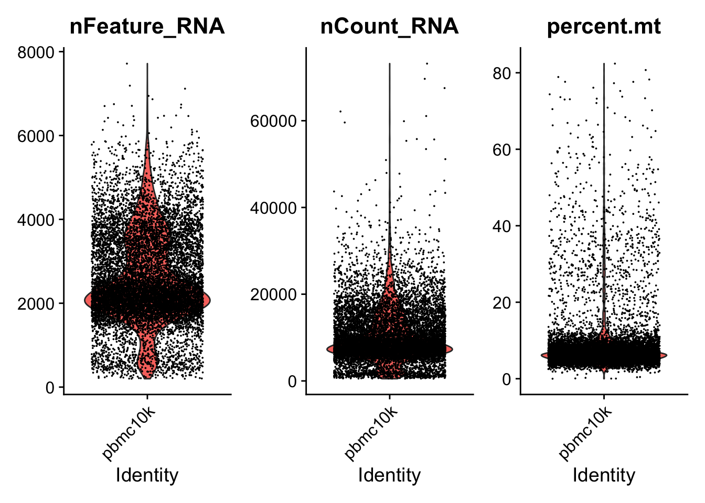
我们接着使用点图来表示 3 者之间的关系。
# FeatureScatter is typically used to visualize feature-feature relationships, but can be used
# for anything calculated by the object, i.e. columns in object metadata, PC scores etc.
plot1 <- FeatureScatter(pbmc, feature1 = "nCount_RNA", feature2 = "percent.mt") +
theme(legend.position="none")
plot2 <- FeatureScatter(pbmc, feature1 = "nCount_RNA", feature2 = "nFeature_RNA") +
theme(legend.position="none")
plot1 + plot2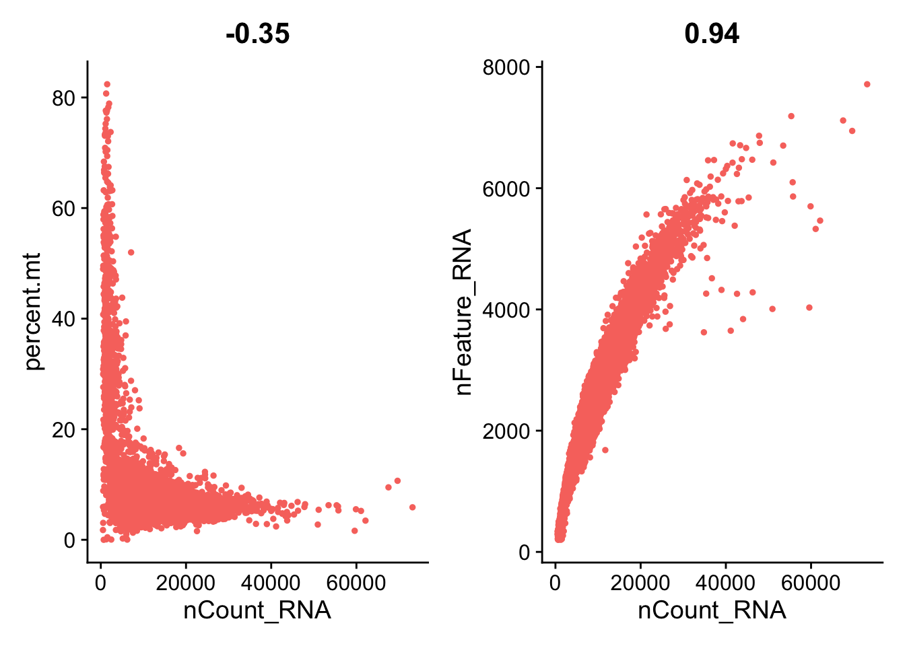
在这里，我们过滤掉具有独特特征计数（基因）超过5000或少于200的细胞。我们也过滤掉线粒体数量大于15%的细胞。
pbmc <- subset(pbmc, subset = nFeature_RNA > 200 & nFeature_RNA < 5000 & percent.mt < 15)然后再一次用提琴图查看过滤后的质量图：
# Visualize QC metrics as a violin plot
VlnPlot(pbmc, features = c("nFeature_RNA", "nCount_RNA", "percent.mt"),
ncol = 3, pt.size = 0.0001)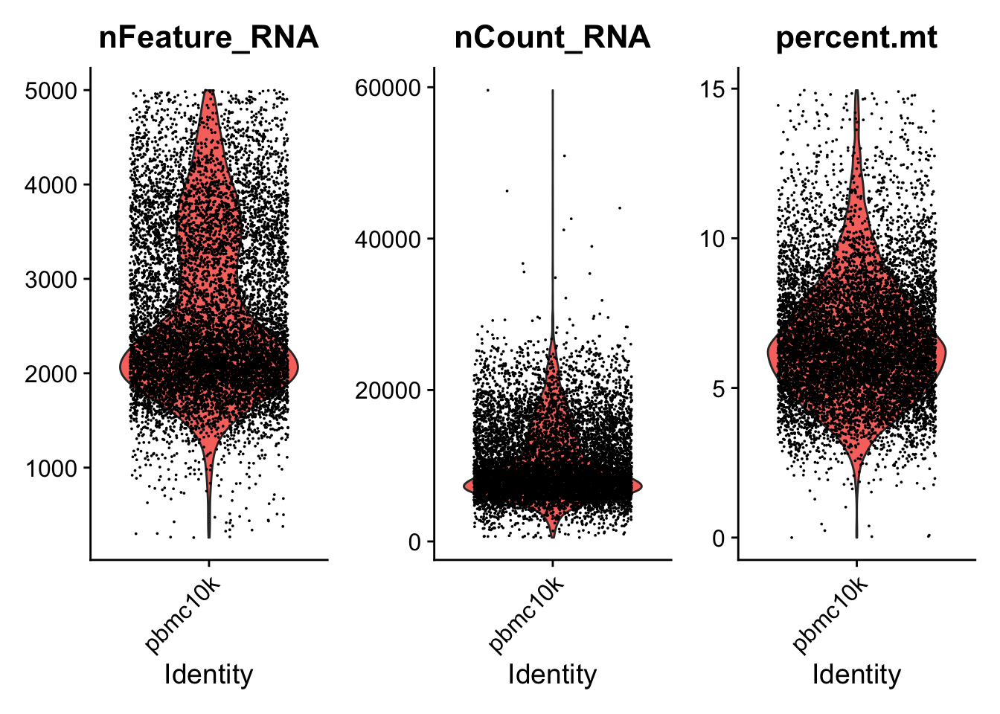
plot1 <- FeatureScatter(pbmc, feature1 = "nCount_RNA", feature2 = "percent.mt") +
theme(legend.position="none")
plot2 <- FeatureScatter(pbmc, feature1 = "nCount_RNA", feature2 = "nFeature_RNA") +
theme(legend.position="none")
plot1 + plot2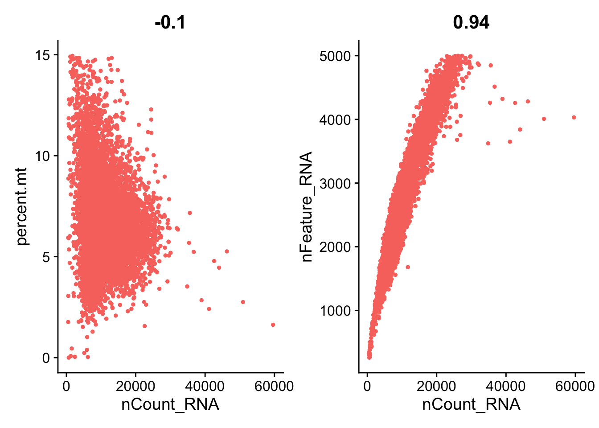
从数据集中删除不需要的细胞后，下一步是对数据进行标准化（规范化）。默认情况下，我们使用全局缩放归一化方法“LogNormalize”，该方法通过总表达对每个细胞的特征表达式测量值进行归一化，将其乘以一个比例因子（默认为10,000），并对结果进行对数变换。标准化值存储在pbmc[["RNA"]]@data中。
pbmc <- NormalizeData(pbmc,
normalization.method = "LogNormalize",
scale.factor = 10000, verbose = FALSE)在这里，我们从基因表达矩阵中采样 10,000 个reads计数，分别可视化标准化前后的基因表达分布（不包括零）。
# set seed and put two plots in one figure
set.seed(123)
par(mfrow=c(1,2))
# original expression distribution
raw_geneExp = as.vector(pbmc[['RNA']]@counts) %>% sample(10000)Warning in .sparse2v(x): sparse->dense coercion: allocating vector of size 1.6
GiBraw_geneExp = raw_geneExp[raw_geneExp != 0]
hist(raw_geneExp)
# expression distribution after normalization
logNorm_geneExp = as.vector(pbmc[['RNA']]@data) %>% sample(10000)Warning in .sparse2v(x): sparse->dense coercion: allocating vector of size 1.6
GiBlogNorm_geneExp = logNorm_geneExp[logNorm_geneExp != 0]
hist(logNorm_geneExp)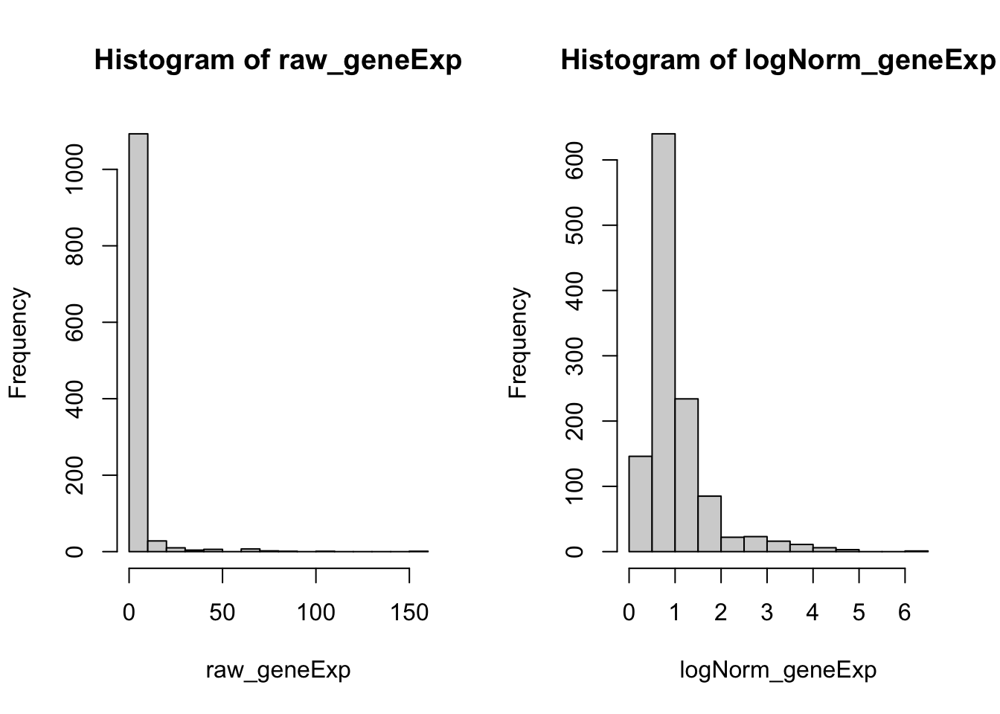
接下来，我们计算数据集中表现出高细胞间差异的特征子集（即，它们在一些细胞中高表达，而在其他细胞中低表达）。研究表明(Brennecke et al. 2013)在下游分析中关注这些基因有助于突出单细胞数据集中的生物信号。
Seurat中的过程详细描述在文献 Stuart et al. 2019 中，FindVariableFeatures()函数中实现直接建模单细胞数据中固有的均值-方差关系来改进以前的版本。默认情况下，Seurat每个数据集返回2000个特征，这些特征将用于下游分析，如PCA。
pbmc <- FindVariableFeatures(pbmc, selection.method = "vst", nfeatures = 2000, verbose = FALSE)
# Identify the 10 most highly variable genes
top10 <- head(VariableFeatures(pbmc), 10)
# plot variable features with and without labels
plot1 <- VariableFeaturePlot(pbmc) +
theme(legend.position="top")
plot2 <- LabelPoints(plot = plot1, points = top10, repel = TRUE) +
theme(legend.position="none")When using repel, set xnudge and ynudge to 0 for optimal resultsplot1 + plot2Warning: Transformation introduced infinite values in continuous x-axis
Transformation introduced infinite values in continuous x-axis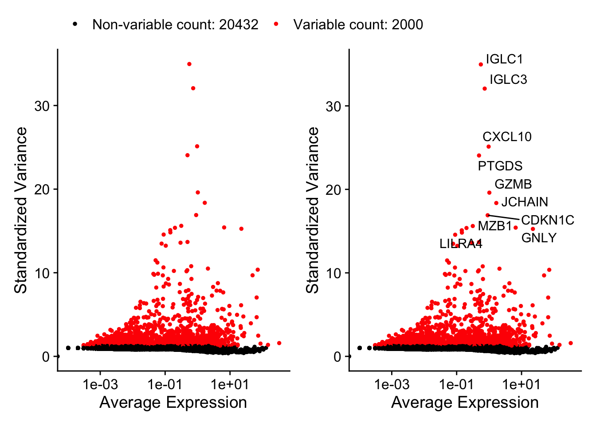
接下来，我们应用线性变换(“缩放”)，这是在PCA等降维技术之前的标准预处理步骤。函数ScaleData()：
pbmc[["RNA"]]@scale.data。在使用上述命令时，我们使用所有基因来缩放数据。缩放是 Seurat 工作流程中的重要步骤，但仅限于将用作 PCA 输入的基因。因此，ScaleData()中的默认仅对先前确定的可变特征（默认值为2000）执行缩放。这将使这一步更快。
在这种情况下，我们的PCA和聚类结果将不受影响。然而，Seurat 热图（用DoHeatmap()生成，如下图所示）需要对热图中的基因进行缩放，以确保高表达的基因不会在热图中占主导地位。我们在本教程中缩放了所有基因。
ScaleData()函数还允许我们从单个单细胞数据集中删除不需要的变异源。例如，我们可以通过回归移除细胞周期阶段或线粒体污染相关的异质性。这个特性可以通过指定vars.to.regress来实现。即：
# skip here
pbmc <- ScaleData(pbmc, vars.to.regress = "percent.mt")但是，特别是对于想要使用此功能的高级用户，Seurat 建议使用他们新的标准化工作流 SCTransform()。该方法在 Seurat 论文(Hafemeister and Satija 2019)中进行了描述，并有一个单独的技术文档。与ScaleData() 一样，函数SCTransform()也包含一个vars.to.regress参数。
接下来，我们对缩放后的数据执行 PCA。默认情况下，只使用先前确定的可变特征作为输入，但是如果你希望选择不同的子集，则可以使用 features 参数定义。
pbmc <- RunPCA(pbmc, features = VariableFeatures(object = pbmc), verbose = FALSE)Seurat提供了几种有用的方法来可视化定义 PCA 的细胞和特征，包括VizDimLoadings()、DimPlot() 和 DimHeatmap()。
# Examine and visualize PCA results a few different ways
print(pbmc[["pca"]], dims = 1:5, nfeatures = 5)PC_ 1
Positive: LTB, IL32, TRAC, CD3D, TRBC2
Negative: FCN1, FGL2, CST3, IFI30, TYMP
PC_ 2
Positive: MS4A1, CD79A, BANK1, IGHM, NIBAN3
Negative: IL32, GZMM, CD3D, CD7, CD247
PC_ 3
Positive: GZMB, CLIC3, NKG7, GNLY, KLRD1
Negative: CCR7, LEF1, TRABD2A, TCF7, LTB
PC_ 4
Positive: CD79B, MS4A1, GNLY, CD79A, LINC00926
Negative: LILRA4, CLEC4C, SERPINF1, TPM2, SCT
PC_ 5
Positive: CDKN1C, HES4, CTSL, TCF7L2, BATF3
Negative: S100A12, ITGAM, VCAN, CES1, MGST1 VizDimLoadings(pbmc, dims = 1:2, reduction = "pca")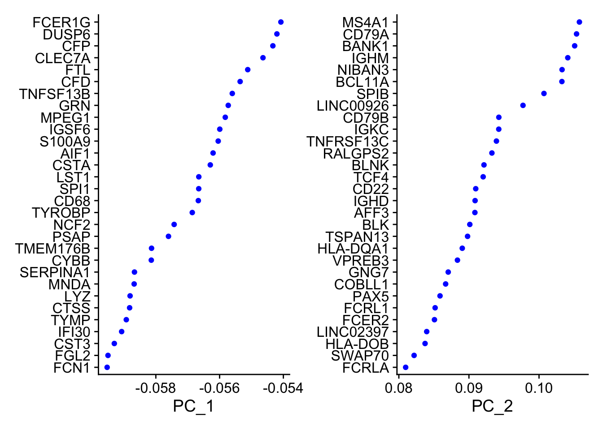
DimPlot(pbmc, reduction = "pca")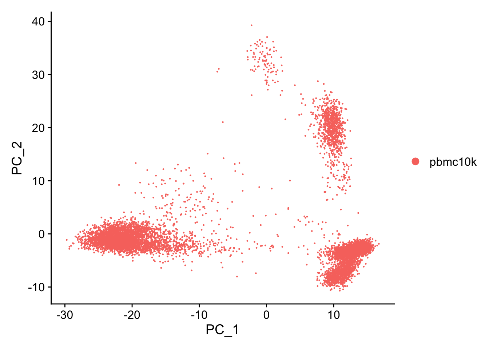
特别是 `DimHeatmap() 允许轻松地探索数据集中异构的主要来源，并且在试图决定将哪些pc包括在进一步的下游分析中时非常有用。
DimHeatmap(pbmc, dims = 1, cells = 500, balanced = TRUE)
DimHeatmap(pbmc, dims = 1:9, cells = 500, balanced = TRUE)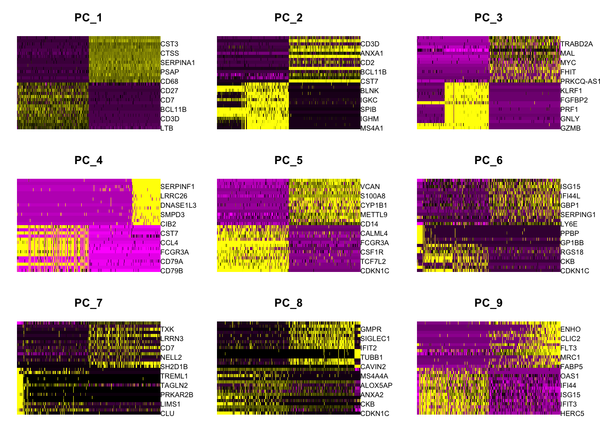
为了克服scRNA-seq数据中任何单个特征中广泛的技术噪声，Seurat基于它们的PCA分数对细胞进行聚类，每个 PC 本质上代表一个“元特征”，该元特征结合了相关特征集中的信息。因此，顶部主成分代表了数据集的鲁棒压缩。在这里，我们选择前20 个 PC。
Seurat v3采用了基于图的聚类方法，基于(Macosko等人，2015)中的初始策略进行改进。重要的是，驱动聚类分析的距离度量（基于先前确定的主成分）保持不变。然而，Seurat在将细胞距离矩阵划分为聚类的方法有了显著改进。这种方法受到最近一些研究的启发，这些研究将基于图的聚类方法应用于scRNA-seq数据（Xu和Su，2015）和CyTOF数据（Levine等人，2015）。简而言之，这些方法将细胞嵌入到一个图结构中，例如K最近邻（KNN）图，其中类似特征表达模式的细胞之间有边连接，然后尝试将该图划分为高度相互连接的“拟团”或“社区”。
就像PhenoGraph一样，首先根据PCA空间中的欧氏距离构建了一个K最近邻图，然后根据局部邻域中的重叠情况（Jaccard相似性）调整任意两个细胞之间的边权重。这个步骤是使用FindNeighbors()函数完成的，它的输入是之前定义的数据集的维度（前20个主成分）。
为了对细胞进行聚类，接下来我们应用模块度优化技术，如Louvain算法（默认）或SLM（Blondel等人，2008），以迭代地将细胞分组在一起，目标是优化标准的模块度函数。FindClusters()函数实现了这个过程，并包含一个分辨率参数，用于设置下游聚类的“粒度”，增大的值会导致更多的聚类。我们发现，在大约3K个细胞的单细胞数据集中，将此参数设置在 0.4-1.2 之间通常会得到良好的结果。对于更大的数据集，通常需要增加最佳分辨率。可以使用Idents()函数找到这些聚类。
pbmc <- FindNeighbors(pbmc, dims = 1:20, verbose = FALSE)
pbmc <- FindClusters(pbmc, resolution = 0.5, verbose = FALSE)Seurat提供多种非线性降维技术，例如tSNE和UMAP，用于可视化和探索这些数据集。这些算法的目标是学习数据的潜在流形，以便将相似的细胞放置在低维空间中的一起。在上述基于图的聚类中确定的细胞应在这些降维图中共同定位。作为UMAP和tSNE的输入，我们建议使用与聚类分析相同的主成分作为输入。
pbmc <- RunUMAP(pbmc, dims = 1:20, verbose = FALSE)Warning: The default method for RunUMAP has changed from calling Python UMAP via reticulate to the R-native UWOT using the cosine metric
To use Python UMAP via reticulate, set umap.method to 'umap-learn' and metric to 'correlation'
This message will be shown once per session然后得到单细胞聚类结果的UMAP图。
DimPlot(pbmc, reduction = "umap")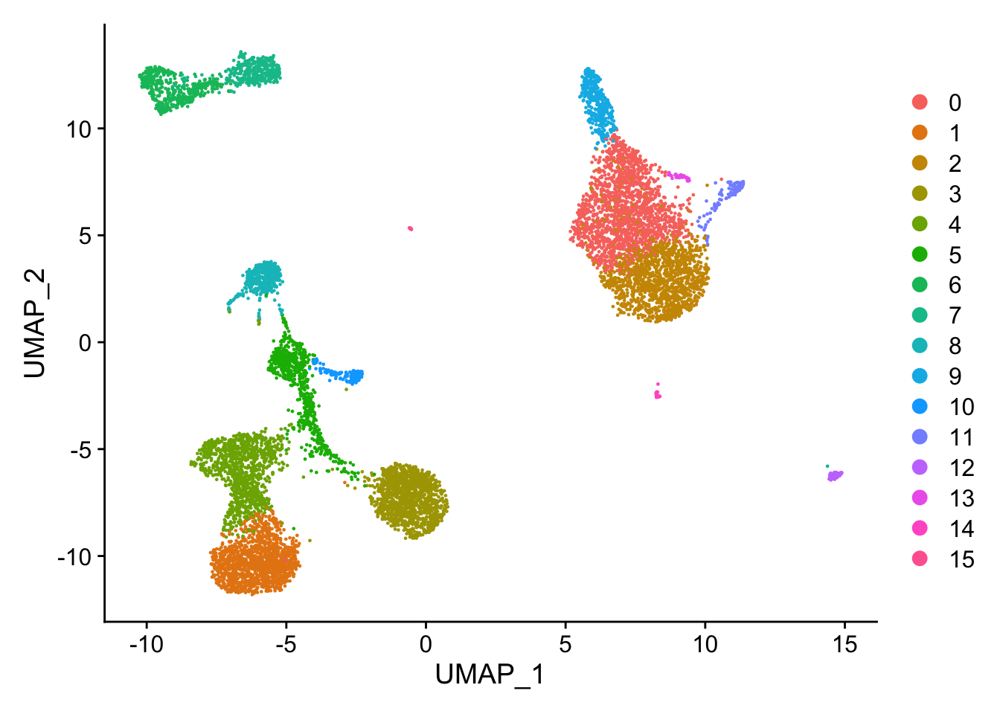
类似地，tSNE。
贴上聚类标签：
DimPlot(pbmc, reduction = "umap", label = TRUE)
plot <- DimPlot(object = pbmc)
LabelClusters(plot = plot, id = 'ident')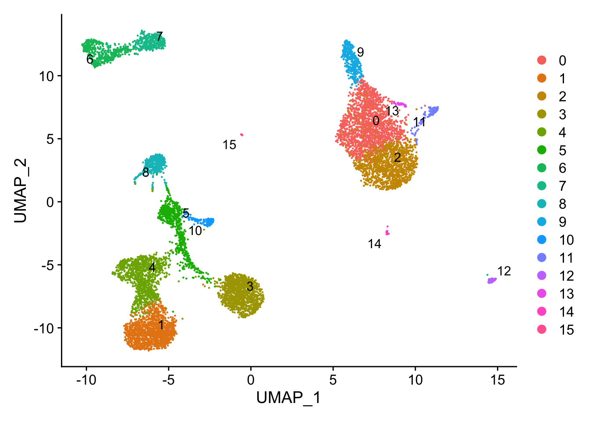
是时候保存我们的分析结果了：
saveRDS(pbmc,
file = "/Users/wsx/Library/CloudStorage/OneDrive-shanghaitech.edu.cn/Public/data/pbmc_processed.rds")